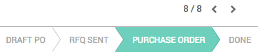
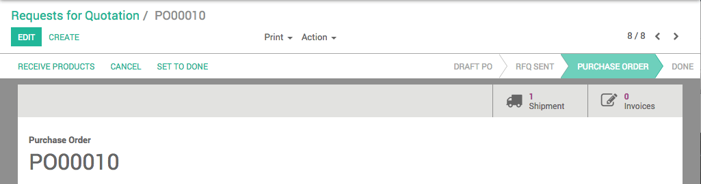

A Request for Quotation (RfQ) is used when you plan to purchase some products and you would like to receive a quote for those products. In Odoo, the Request for Quotation is used to send your list of desired products to your supplier. Once your supplier has answered your request, you can choose to go ahead with the offer and purchase or to turn down the offer.
For more information on best uses, please read the chapter Request for Quotation, Purchase Tender or Purchase Order?
Configuration
Creating a Request for Quotation
In the Purchases module, open and click on Create.

Select your supplier in the Vendor menu, or create it on-the-fly by clicking on Create and Edit. In the Order Date field, select the date to which you wish to proceed to the actual order.
In Products, click on Add an item. Select the product you wish to order in the Product menu. Specify the Quantity by inserting the number and selecting the unit of measure. In the Unit Price field, specify the price you would like to be offered (you can also leave the field blank if you don't know what the price should be) , and add the expected delivery date in the Scheduled Date field. Click on Save, then Print Rfq or Send Rfq by email (make sure an email address is specified for this supplier or enter a new one).

After having clicked on Send, you will notice that the RFQ's status will switch from Draft to RFQ Sent.

Once your supplier has replied with an offer, update the RfQ by clicking on Edit to fit the quotation (prices, taxes, expected delivery lead time, payment terms, etc.), then click on Save to issue a Purchase Order.
To proceed with the order, click on Confirm Order to send the order to the supplier. The RfQ's status will switch to Purchase Order.
The status of the RfQ will change to PURCHASE ORDER. Tabs in the upper right corner of the order will show 1 Shipment and 0 Invoice.
